화약류관리기사 (2007-03-04 기출문제)
1과목: 일반화약학
1. 다음 중 무연화약의 안정제로 주로 사용하는 것은?
- 알코올
- 아세톤
- 디페닐아민
- 니트로글리세린
(정답률: 90%)

2. 다음 중 다이너마이트를 분류할 때 혼합 다이너마이트에 속하지 않는 것은?
- 코오타이트
- 규조토 다이너마이트
- 스트레이트 다이너마이트
- 암모니아 다이너마이트
(정답률: 70%)
3. 감도가 예민한 뇌홍을 안전하게 저장하는 일반적인 방법으로 옳은 것은?
- 암모니아수 속에 저장한다.
- 물속에 저장한다.
- 건조한 모래 속에 저장한다.
- 진공 속에 저장한다.
(정답률: 80%)
4. 다음 중 산소 공급제 역할을 하는 물질로만 이루어진 것은?
- 질산칼륨, 질산암모늄, 염소산칼륨
- 목분, 전분, 식염
- 질산칼륨, 식염, 염화칼륨
- 염화칼륨, 질산암모늄, 규소철
(정답률: 82%)
5. 다음 중 면역에 관한 설명 중 틀린 것은?
- 제조시 질산과 황산의 혼산을 사용한다.
- 습면약의 취급은 위험하므로 되도록 건조하여 취급한다.
- 아세톤, 에테르 등에 용해한다.
- 함유된 질소의 양에 따라 강면약, 약면약 등으로 구분된다.
(정답률: 92%)
6. 니트로글리세린(NG)의 화학식으로 옳은 것은?
- C3H5(NO2)3
- C3H5(NO3)3
- C3H5(NO)3
- C3H5(HNO2)3
(정답률: 91%)
7. 화약류를 법적으로 분류할 때 해당되지 않는 것은?
- 화약
- 폭약
- 화공품
- 파괴약
(정답률: 82%)
8. 다이너마이트 저장 중 약포에서 니트로글리세린이 스며나와 바닥이 오염되었을 때의 처리 방법으로 가장 적당한 것은?
- 50℃ 이상의 온수로 바닥을 씻는다.
- 가성소다 수용액과 알콜을 혼합한 액체로 분해시킨 후 마른 걸레로 닦아낸다.
- 냉수로 희석한 후 서서히 건조시킨다.
- 자연 건조시킨 후 남아 있는 약품을 연소시킨다.
(정답률: 알수없음)
9. 다음 화약류의 자연분해 및 폭발의 원인으로 가장 옳은 것은?
- 온도의 하강
- 온도의 상승
- 농도의 상승
- 농도의 저하
(정답률: 91%)
10. 약포경이 30mm인 다이너마이트의 순폭시험을 실시한 결과 최대 순폭거리는 15cm이었다. 순폭도응 얼마인가?
- 0.15
- 0.5
- 5
- 10
(정답률: 90%)
11. 다음 중 뇌홍의 제조에 사용되는 주성분은?
- 수은
- 목탄
- 암모니아
- 염소산칼륨
(정답률: 92%)
12. 질화납(Lead Azide)에 대한 설명 중 틀린 것은?
- 충격과 마찰에 민감하게 반응한다.
- 기폭약의 원료로 쓰인다.
- 뇌홍에 비해 기폭력이 약하다.
- 발화점은 약 320~360℃ 정도이다.
(정답률: 82%)
13. 공업용 니트로글리세린(nitroglycerine)의 동결온도는?
- 약 -28℃
- 약 -8℃
- 약 8℃
- 약 28℃
(정답률: 80%)
14. 화약류를 성능에 따라 분류하면 폭약은 어느 정도의 폭속을 갖고 있는 것을 뜻하는가?
- 300m/s 이내
- 500~1000m/s 이내
- 1000~2000m/s 이내
- 2000~8000m/s 이내
(정답률: 90%)
15. 도폭선에 대한 설명 중 옳지 않은 것은?
- 제1종 도폭선은 폭속이 약 5500m/s 이상이다.
- 제1종 도폭선의 심약은 TNT와 피크린산을 사용한다.
- 제2종 도폭선은 심약을 펜트리트나 핵소겐을 사용한다.
- 제2종 도폭선은 금속관체에 심약을 용진(熔眞)한 것이다.
(정답률: 91%)
16. 다음 중 기폭약과 가장 거리가 먼 것은?
- 뇌홍
- 테트라센
- DDNP
- DNN
(정답률: 64%)
17. 니트로글리콜(Ng) 제조에 사용되는 원료물질에 해당하는 것은?
- HO-CH=CH-OH
- CH3-CH2-CH2-OH
- CH3-CH2-CH2-CH3
- HO-CH2-CH2-OH
(정답률: 알수없음)
18. 갱내(坑內)에서 TNT의 사용이 금지되어 있는 주된 이유는?
- 위력이 강하여 갱도가 파손될 염려가 있으므로
- 군용폭약으로 인간의 사용을 제한하려고
- 폭발 후 다량의 유독성 가스 발생으로 인하여
- 가격이 비싸서 경제성이 떨어지므로
(정답률: 92%)
19. 뇌관 1개의 저항이 1.4Ω인 전기뇌관 20개를 직렬로 결선하여 제발하려면 몇 V의 전압이 필요한가? (단, 단선 1m의 저항은 0.02Ω이고, 총연장은 100m, 발파기의 내부 저항은 없는 것으로 간주하며, 뇌관 1개당 소요 전류는 2A이다.)
- 30
- 40
- 60
- 180
(정답률: 92%)
20. 다음 중 혼합화약류에 속하지 않는 것은?
- 흑색화약
- 액체산소폭약
- 칼릿(Carlit)
- 피크린산(Picric acid)
(정답률: 80%)
2과목: 발파공학
21. 진동을 분류함에 있어 발파진동과 지진동으로 분류할 수 있다. 다음 중 설명이 틀린 것은?
- 발파진동의 경우 자연지진에 비해 지속시간이 짧다.
- 지진동의 경우 지하 10km 이상 되는 지점에서 발생되며, 발파진동의 경우 지표 또는 지표 가까운 부분에서 발생된다.
- 진동의 주파수는 발파진동이 자연지진에 비해 작게 발생되므로 건물에 미치는 영향이 크다.
- 지진에 의한 진동 피해의 경우 그 정도를 보통 가속도로 표시하고, 발파 진동에 의한 구조물의 피해는 진동 속도로 표시한다.
(정답률: 10%)
22. 공당 장약량 W(kg), 발파계수 C, 공간격 S(m), 천공길이를 L(m)라 할 때 프리스폴리팅의 공당 장약량을 계산하는 방법으로 옳은 것은?
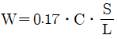
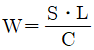
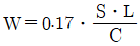
- W=CㆍSㆍL
(정답률: 10%)
23. 발파 현장에서 암반 천공작업에 의해 발생되는 음향파워 레벨이 115dB이며, 수음점이 천공작업을 실시하는 장소와 완전 노출되어 있으며 평지이다. 음원과 수음점이 45m 이격된 거리에서의 음압레벨(dB)을 구하면 얼마나 되겠는가? (단, 음원은 점음원으로서 반구면파 전파로 간주한다.)
- 61.21dB
- 68.21dB
- 73.94dB
- 81.45dB
(정답률: 10%)
24. 20공의 발파공을 기폭하기 위한 뇌관으로 비전기식 뇌관 LP 1번, LP 2번, LP 3번, LP 4번, LP 5번이 각각 4개씩 있다. 모든 발파공이 14ms 이상의 시차를 두고 순차적으로 기폭되도록 하기 위해서는 지연시차가 17ms인 연결뇌관이 최소 몇 개가 필요한가?
- 3개
- 4개
- 5개
- 6개
(정답률: 20%)
25. 계단식 발파(bench blasting)에 있어서 공간격(hole spacing)을 결정할 때는 계단높이 H와 저항선 B의 비 즉, H/B 값에 따라 달리 결정된다. 공간격이 저항선에 의해서만 결정되는 기준으로 맞는 것은?
- H/B＜4일 경우
- H/B≥4일 경우
- H/B≥6일 경우
- H/B＜6일 경우
(정답률: 알수없음)
26. 폭약이 기폭하는 요인 중 뇌관의 작용과 가장 거리가 먼 것은?
- 뇌관의 폭발시 가스퉁동에 의한 기폭
- 뇌관의 전기열에 의한 기폭
- 뇌관의 관체 파편에 의한 기폭
- 뇌관의 폭발열에 의한 기폭
(정답률: 0%)
27. 계단 발파에서 대괴를 얻기 위한 발파 방법으로 틀린 것은?
- 균질한 암반에서 주상 장약을 감소한 약장약으로 하여 시행한다.
- 공간격(S)과 저항선(B)의 비(S/B)를 1보다 크게 하여 시행한다.
- 제발발파를 실시한다.
- 1회에 1열 발파를 실시한다.
(정답률: 0%)
28. 다음과 같은 조건으로 암석갱도를 굴진하려고 한다. 이 때의 갱도굴착단면은 대략 얼마인가?
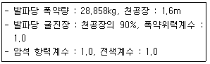
- 15m2
- 17m2
- 21m2
- 23m2
(정답률: 알수없음)
29. 다음 중 구조물 발파 해체공법에 대한 설명으로 틀린 것은?
- Felling(전도공법):기술적으로 가장 간단한 공법이나 전도방향으로 충분한 공간확보가 필요하다.
- Telescoping(단축붕괴공법):구조물이 위치한 제자리에 그대로 붕락되도록 하는 공법이며, 주변에 여유공간이 없을 때 주로 사용된다.
- Implosion(내파공법):구조물의 내부에만 화약을 장전, 기폭시킴으로서 붕락시 외벽을 중심부로 끌어당길 수 있도록 유도하는 방법이다.
- Toppling(상부붕락공법):2-3열의 기둥을 가진 건물을 선형적으로 붕괴시키는 공법으로 붕괴 후 전도가 일어난다.
(정답률: 0%)
30. 다음 중 전색물의 구비조건으로 적당하지 않는 것은?
- 발파공벽과의 마찰이 큰 것
- 압축률이 작은 것
- 연소되지 않는 것
- 불발이나 잔류폭약을 회수하기에 안전한 것
(정답률: 17%)
31. 분산장약(deck charge)에 관한 설명 중 틀린 것은?
- 주상장약(column charge)의 기폭시간을 달리하여 진동을 감소시킨다.
- 분할장약들 사이의 전색장은 천공경에 비례한다.
- 습윤된 발팓공의 삼입전색장은 건조한 발파공의 4배로 한다.
- 기폭순서는 상부자유면에서 가까운 폭약부터 기폭한다.
(정답률: 0%)
32. 시험발파 결과 누두지수 n=1.2로 과장약 발파가 되었다. 이를 표준발파 시키고자 할 때 필요한 장약량은 시험발파에 비해 몇 % 정도면 되는가? (단, Dambrun 식을 이용할 것)
- 120%
- 80%
- 65%
- 52%
(정답률: 8%)
33. 폭원으로부터 자유면 방향으로 전파해 가는 삼각파의 파두 응력치가 1.0×104kg/cm2이다. Hopkinson 효과에 의한 인장파괴시 동적인장강도가 9.0×102kg/cm2인 암반에 작용할 때 파단되는 평판의 수는?
- 약 4개
- 약 9개
- 약 11개
- 약 15개
(정답률: 0%)
34. 심빼기 버언컷에서 공공경이 10cm, 장약공경이 3.3cm일 때 장약공의 단위 길이당 장약량(kg/m)은? (단, Langefors 식을 이용하고 공공과 장약공 중심간의 거리는 150mm이다.)
- 0.978
- 0.756
- 0.276
- 0.125
(정답률: 8%)
35. 다음 중 Trim Blasting에 대한 설명으로 틀린 것은?
- 주발파 후 발파가 이루어진다.
- 천공간격은 Pre-splitting 보다는 길다.
- 저항선은 일반적으로 공간간격의 1.3배 정도이다.
- 공저장약은 주상장약밀도의 0.5~1.0배 정도로 한다.
(정답률: 19%)
36. 발파공법을 적용함에 있어 설계시 안전성 및 효율성도 중요하지만 공사 원가에 대한 경제성도 사전에 검토되어야 한다. 다음 중 경제성 검토에 대한 설명으로 틀린 것은?
- 발파가 대규모일 경우 천공지름이 증가할수록 상대원가는 감소한다.
- 발파가 대규모일수록 대괴의 발생이 많아지므로 적재원가 및 운반원가 등이 감소한다.
- m3당 장약원가는 소구경보다 대구경인 경우 감소한다.
- 발파의 경제성을 검토할 경우 천공원가 및 폭약원가 등은 직접비로 분류하며, 2차 소할의 경우 간접비로 분류하여 생산 원가를 산출한다.
(정답률: 0%)
37. 다음 설명 중 가장 거리가 먼 것은?
- 암석계수(g)는 암석 약 1m3를 발파할 때 필요로 하는 폭약량을 뜻한다.
- 강력한 폭약일수록 폭약계수(e) 값은 작게 된다.
- 전색계수(d) 값이 1.25라는 것은 적당히 깊은 장약공에 전색이 불안전하게 되었다는 것을 뜻한다.
- 누두공의 크기와 모양은 누두지수의 함수 f(n)과 관계된다.
(정답률: 10%)
38. 그림과 같이 전기뇌관 20개를 직ㆍ병렬로 결선할 때 제발하기 위한 소요전압은 얼마인가? (단, 뇌관 1개의 저항치는 1.2Ω, 발파모선 1m의 저항은 0.02Ω, 총연장 100m라 하고 발파기의 내부 저항은 고려하지 않고 외관 1개당 소요전력은 2A로 한다.)
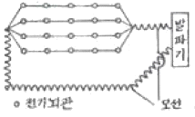
- 10V
- 16V
- 28/V
- 52V
(정답률: 31%)
39. 허용진동속도(Vo)가 0.5cm/sec인 지역에서 시험발파를 시행하여 얻은 발파진동식의 상수 K=340, n=1.90이었다. 다음의 지발당 장약량(W)과 거리(D)를 갖는 발파 중 안전한 발파는? (단, 발파진동식은 자승근 환산거리를 사용하였고, 사용된 단위는 V(cm/sec), D(m), W(kg)이다.)
- W=5kg, D=50m
- W=15kg, D=100m
- W=25kg, D=150m
- W=35kg, D=200m
(정답률: 16%)
40. 다음 중 미진동 파쇄기에 대한 설명으로 틀린 것은?
- 미진동 파쇄기는 화약류 단속법에서 화공품에 속하며, Polyethylene 약통과 소형전기뇌관과 같은 점화구가 한쌍으로 되어 취급된다.
- 60~100m/sec 정도의 속도로 연소되고 고온ㆍ고압의 가스압을 발생하여 대상물을 파쇄한다.
- 미진동 파쇄기는 밀폐상태에서 150~250kgf/cm2 정도의 압력과 강한 충격파를 발생시킨다.
- 주변 환경상 비석, 폭발음, 진동 등의 공해로 폭약의 사용이 어려운 곳에서 암반이나 콘크리트 파쇄에 사용되고 있다.
(정답률: 알수없음)
3과목: 암석역학
41. σz=100kgf/cm2, σy=70kgf/cm2, σz=40kgf/cm2를 받고 있는 삼축응력상태에서 x방향 편차변형률이 5×10-5일 때, 강성률 G는 얼마인가?
- 3×105kgf/cm2
- 4×105kgf/cm2
- 5×105kgf/cm2
- 6××105kgf/cm2
(정답률: 0%)
42. 직경이 10m, 유효크기(equivalent dimension)가 5m인 터널에서 Q값이 10일 때, 무지보 최대폭은 약 얼마인가?
- 10m
- 12m
- 14m
- 15m
(정답률: 10%)
43. 다음 중 암석에 있어서 creep 현상이란?
- 일정 변형하에서 응력이 시간에 따라 증대하는 현상
- 일정 응력하에서 탄성계수가 시간에 따라 감소하는 현상
- 일정 응력하에서 변형이 시간에 따라 감소하는 현상
- 일정 응력하에서 변형이 시간에 따라 증대하는 현상
(정답률: 0%)
44. 암석의 역학적 거동을 모사하기 위한 모형과 그에 해당되는 수식이 잘못 표현된 것은? (단, E:탄성계수, σ:응력, ε:변형률, η:점성률, t:시간)
- Newton Material,
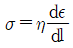
- Kelvin Material,
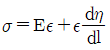
- Maxwell Material,
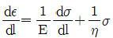
- Hooke Material, σ=Eε
(정답률: 0%)
45. 다음의 주응력에 대한 설명 중 틀린 것은?
- 주응력은 기준 좌표측의 회전에 따라 변화한다.
- 주응력면에는 전단응력 성분이 없다.
- 단축압축시험에서 가압되는 시험편의 접촉면은 주응력면이다.
- 주응력 축들은 서로 수직을 이룬다.
(정답률: 9%)
46. 정수압의 응력장에 원형공동을 굴착했을 때 공벽에서의 접선응력은? (단, 이때 정수압은 -P라고 한다.)
- -2P
- -3P
- -4P
- -5P
(정답률: 10%)
47. Hoek-Brown 파괴기준에서 신선한 암석의 단축압축강도가 10MPa, 암석의 성질을 표현하는 상수 m=15.0, s=1.0이고, 최소주응력이 5MPa인 경우 최대주응력은 얼마인가?
- 24MPa
- 34MPa
- 44MPa
- 54MPa
(정답률: 10%)
48. 현지 암반(lnsltu rock)의 조사에 있어 균열ㆍ절리가 있는 완전 암석(Intact rock)의 탄성계수를 Ea, 탄성파 전파속도를 Va, 현지 암반의 탄성계수를 Eb, 탄성파 전파속도를 Vb라 하면 균열계수(crack coefficient)는 다음 중 어느 것으로 표시하는가?
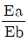
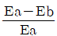
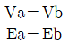
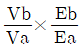
(정답률: 16%)
49. Mohr의 파괴이론과 관련한 설명으로 틀린 것은?
- 응력원이 파괴포락선의 내부에 존재하면 파괴가 발생하지 않는다.
- 정수압 상태에서도 파괴가 발생한다.
- 응력원이 파괴포락선과 접하면 파괴가 발생한다.
- 파괴면의 방향을 예측할 수 있다.
(정답률: 알수없음)
50. 응력=변형률의 관계는 동방탄성체에서 평면응력의 경우 σ=[D]ε과 같은 행렬식으로 간단히 표현할 수 있다. 이 때의 행렬식이 다음 식과 같다면 (A)에 알맞은 것은? (단, E:영률, ν:포아송비)
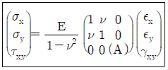
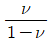
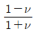
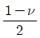
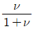
(정답률: 8%)
51. 다음 중 록볼트의 암반에 대한 고정능력을 측정하는 시험법은?
- 인발시험
- 축력시험
- 전단시험
- 토크-인장시험
(정답률: 알수없음)
52. 암반의 천공능률과 가장 관련이 큰 시험법은?
- LA 마모시험
- 반발경도시험
- 압입경도시험
- 충격감도시험
(정답률: 0%)
53. 피로파괴에 관한 설명 중 틀린 것은?
- 피로파괴란 반복하중 후에 발생되는 파괴를 말한다.
- 반복회수가 증가할수록 피로파괴한계강도에 빠르게 도달한다.
- 피로하중에 의해 파괴될 때의 강도를 피로강도가 하며 암석의 경우 준정적 최대압축강도의 40%수준이다.
- 반복하중이란 하중을 가하다가 제거하는 것을 주기적으로 반복하는 것으로 최대강도가 50%로 최하 1내지 2주기 이상을 반복하는 것을 의미한다.
(정답률: 16%)
54. 인장강도를 측정하기 위한 직접인장시험, 압열인장시험, 굴곡시험에서 구해진 인장강도의 일반적인 크기 순서로 맞는 것은? (단, 동일 암석 시료에 대해서 시험을 실시)
- 직접＞압열＞굴곡
- 압열＞굴곡＞직접
- 굴곡＞압열＞직접
- 압열＞직접＞굴곡
(정답률: 19%)
55. 삼축압축시험에서 봉압이 증가할 때 발생하는 현상이 아닌 것은?
- 변형률 연화 현상이 두드러진다.
- 파괴강도가 증가한다.
- 취성에서 연성 거동으로 전이현상이 발생한다.
- 영률이 급격히 증가한다.
(정답률: 0%)
56. 아래 그림에서와 같이 터널천장에 사면체 쐐기형태의 블록이 절리면과의 마찰저항 없이 자유낙하 할 수 있는 상태에 놓여있다. 이 블록의 빗금친 밑면의 주변장이 16m라면 블록의 낙하를 방지하기 위해 전단강도가 2MPa인 숏크리트를 3cm 두께로 타설할 때 숏크리트가 지지할 수 있는 블록의 최대하중은 얼마인가?
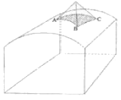
- 96 ton
- 9.6 ton
- 0.96 ton
- 0.096 ton
(정답률: 0%)
57. 초기응력을 측정하기 위하여 수압파쇄시험을 수행하여 초기파쇄압력(Pb)은 150kg/cm2, 균열확장압력은 (PP)은 100kg/cm2, 균열폐쇄압력(Ps)은 70kg/cm2, 균열개구압력(Pr)은 120kg/cm2을 얻었다 이 때 최대수평주응력은?
- 70kg/cm2
- 90kg/cm2
- 110kg/cm2
- 150kg/cm2
(정답률: 0%)
58. 다음의 응력-변형율(σ-ε)선도에서 A, B점에서 구한 탄성율(young율)을 다음 중 어느 것인가?
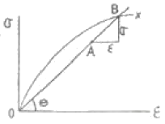
- 접선 young율
- 원점 접선 young율
- 중복 young율
- 할선 young율
(정답률: 10%)
59. 다음 중 암석파열(rock burst) 현상에 대한 설명으로 옳은 것은?
- 지하 1000m 이상의 단단한 암반내에 굴착된 터널 등의 주변 암반이 급격히 붕괴되어 파괴된 암석 파편이 터널내에 돌출해 오는 현상을 말한다.
- 현지응력이 매우 크고, 암석의 파괴 후 강성이 주위암반의 강성보다 작을 때 발생하기 쉽다.
- 암석이 Hooke 탄성체에 가깝고 충분히 큰 탄성변형률 에너지를 축적할 수 있을 정도로 단단할 경우 발생하기 쉽다.
- 암석파열을 발생시키는 원인을 방아쇠 효과(trigger effect)라고 한다.
(정답률: 19%)
60. 다음 파괴이론 중 중간 주응력을 고려한 것은?
- Coulomb 이론
- Griffith 이론
- Mohr 이론
- Nadai 이론
(정답률: 20%)
4과목: 화약류 안전관리 관계 법규
61. 위험공실의 준방폭식 구조의 기준에 대한 설명 중 틀린 것은?
- 출입구는 방폭면에 설치한다.
- 방폭면에는 되도록 큰 창을 설치한다.
- 출입구의 폭은 1.5m 이하로 한다.
- 지붕은 방폭방향에 대하여 하향으로 경사지게 한다.
(정답률: 10%)
62. 화약류에 대한 허가권자로 잘못된 것은?
- 화약류 판매업 허가-지방경찰청장
- 폭약 제조업 허가-경찰청장
- 1급 저장소 설치 허가-지방경찰청장
- 간이 저장소 설치 허가-지방경찰청장
(정답률: 알수없음)
63. 꽃불류 발사통안에 넣을 때 가장 옳은 방법은?
- 손으로 서서히 밀어 넣는다.
- 끈을 사용하여 서서히 넣는다.
- 부드럽게 물을 섞어서 넣는다.
- 다짐봉으로 서서히 밀어 넣는다.
(정답률: 8%)
64. 꽃불류 사용의 기술상의 기준 중 쏘아 올리는 꽃불류는 몇 m 이상의 높이에서 퍼지도록 하여야 하는가? (단, 법령상의 기준일)
- 10m
- 20m
- 30m
- 50m
(정답률: 알수없음)
65. 복원중(정확한 내용을 아시는 분께서는 오류 신고를 통하여 내용 작성 부탁드립니다. 여기서는 1번을 누르면 정답 처리 됩니다.)
- 복원중(정확한 보기 내용을 아시는분께서는 오류 신고를 통하여 내용 작성부탁 드립니다.)
- 복원중(정확한 보기 내용을 아시는분께서는 오류 신고를 통하여 내용 작성부탁 드립니다.)
- 복원중(정확한 보기 내용을 아시는분께서는 오류 신고를 통하여 내용 작성부탁 드립니다.)
- 복원중(정확한 보기 내용을 아시는분께서는 오류 신고를 통하여 내용 작성부탁 드립니다.)
(정답률: 0%)
66. 복원중(정확한 내용을 아시는 분께서는 오류 신고를 통하여 내용 작성 부탁드립니다. 여기서는 1번을 누르면 정답 처리 됩니다.)
- 복원중(정확한 보기 내용을 아시는분께서는 오류 신고를 통하여 내용 작성부탁 드립니다.)
- 복원중(정확한 보기 내용을 아시는분께서는 오류 신고를 통하여 내용 작성부탁 드립니다.)
- 복원중(정확한 보기 내용을 아시는분께서는 오류 신고를 통하여 내용 작성부탁 드립니다.)
- 복원중(정확한 보기 내용을 아시는분께서는 오류 신고를 통하여 내용 작성부탁 드립니다.)
(정답률: 9%)
67. 복원중(정확한 내용을 아시는 분께서는 오류 신고를 통하여 내용 작성 부탁드립니다. 여기서는 1번을 누르면 정답 처리 됩니다.)
- 복원중(정확한 보기 내용을 아시는분께서는 오류 신고를 통하여 내용 작성부탁 드립니다.)
- 복원중(정확한 보기 내용을 아시는분께서는 오류 신고를 통하여 내용 작성부탁 드립니다.)
- 복원중(정확한 보기 내용을 아시는분께서는 오류 신고를 통하여 내용 작성부탁 드립니다.)
- 복원중(정확한 보기 내용을 아시는분께서는 오류 신고를 통하여 내용 작성부탁 드립니다.)
(정답률: 알수없음)
68. 복원중(정확한 내용을 아시는 분께서는 오류 신고를 통하여 내용 작성 부탁드립니다. 여기서는 1번을 누르면 정답 처리 됩니다.)
- 복원중(정확한 보기 내용을 아시는분께서는 오류 신고를 통하여 내용 작성부탁 드립니다.)
- 복원중(정확한 보기 내용을 아시는분께서는 오류 신고를 통하여 내용 작성부탁 드립니다.)
- 복원중(정확한 보기 내용을 아시는분께서는 오류 신고를 통하여 내용 작성부탁 드립니다.)
- 복원중(정확한 보기 내용을 아시는분께서는 오류 신고를 통하여 내용 작성부탁 드립니다.)
(정답률: 0%)
69. 복원중(정확한 내용을 아시는 분께서는 오류 신고를 통하여 내용 작성 부탁드립니다. 여기서는 1번을 누르면 정답 처리 됩니다.)
- 복원중(정확한 보기 내용을 아시는분께서는 오류 신고를 통하여 내용 작성부탁 드립니다.)
- 복원중(정확한 보기 내용을 아시는분께서는 오류 신고를 통하여 내용 작성부탁 드립니다.)
- 복원중(정확한 보기 내용을 아시는분께서는 오류 신고를 통하여 내용 작성부탁 드립니다.)
- 복원중(정확한 보기 내용을 아시는분께서는 오류 신고를 통하여 내용 작성부탁 드립니다.)
(정답률: 10%)
70. 복원중(정확한 내용을 아시는 분께서는 오류 신고를 통하여 내용 작성 부탁드립니다. 여기서는 1번을 누르면 정답 처리 됩니다.)
- 복원중(정확한 보기 내용을 아시는분께서는 오류 신고를 통하여 내용 작성부탁 드립니다.)
- 복원중(정확한 보기 내용을 아시는분께서는 오류 신고를 통하여 내용 작성부탁 드립니다.)
- 복원중(정확한 보기 내용을 아시는분께서는 오류 신고를 통하여 내용 작성부탁 드립니다.)
- 복원중(정확한 보기 내용을 아시는분께서는 오류 신고를 통하여 내용 작성부탁 드립니다.)
(정답률: 17%)
71. 복원중(정확한 내용을 아시는 분께서는 오류 신고를 통하여 내용 작성 부탁드립니다. 여기서는 1번을 누르면 정답 처리 됩니다.)
- 복원중(정확한 보기 내용을 아시는분께서는 오류 신고를 통하여 내용 작성부탁 드립니다.)
- 복원중(정확한 보기 내용을 아시는분께서는 오류 신고를 통하여 내용 작성부탁 드립니다.)
- 복원중(정확한 보기 내용을 아시는분께서는 오류 신고를 통하여 내용 작성부탁 드립니다.)
- 복원중(정확한 보기 내용을 아시는분께서는 오류 신고를 통하여 내용 작성부탁 드립니다.)
(정답률: 알수없음)
72. 복원중(정확한 내용을 아시는 분께서는 오류 신고를 통하여 내용 작성 부탁드립니다. 여기서는 1번을 누르면 정답 처리 됩니다.)
- 복원중(정확한 보기 내용을 아시는분께서는 오류 신고를 통하여 내용 작성부탁 드립니다.)
- 복원중(정확한 보기 내용을 아시는분께서는 오류 신고를 통하여 내용 작성부탁 드립니다.)
- 복원중(정확한 보기 내용을 아시는분께서는 오류 신고를 통하여 내용 작성부탁 드립니다.)
- 복원중(정확한 보기 내용을 아시는분께서는 오류 신고를 통하여 내용 작성부탁 드립니다.)
(정답률: 16%)
73. 복원중(정확한 내용을 아시는 분께서는 오류 신고를 통하여 내용 작성 부탁드립니다. 여기서는 1번을 누르면 정답 처리 됩니다.)
- 복원중(정확한 보기 내용을 아시는분께서는 오류 신고를 통하여 내용 작성부탁 드립니다.)
- 복원중(정확한 보기 내용을 아시는분께서는 오류 신고를 통하여 내용 작성부탁 드립니다.)
- 복원중(정확한 보기 내용을 아시는분께서는 오류 신고를 통하여 내용 작성부탁 드립니다.)
- 복원중(정확한 보기 내용을 아시는분께서는 오류 신고를 통하여 내용 작성부탁 드립니다.)
(정답률: 알수없음)
74. 복원중(정확한 내용을 아시는 분께서는 오류 신고를 통하여 내용 작성 부탁드립니다. 여기서는 1번을 누르면 정답 처리 됩니다.)
- 복원중(정확한 보기 내용을 아시는분께서는 오류 신고를 통하여 내용 작성부탁 드립니다.)
- 복원중(정확한 보기 내용을 아시는분께서는 오류 신고를 통하여 내용 작성부탁 드립니다.)
- 복원중(정확한 보기 내용을 아시는분께서는 오류 신고를 통하여 내용 작성부탁 드립니다.)
- 복원중(정확한 보기 내용을 아시는분께서는 오류 신고를 통하여 내용 작성부탁 드립니다.)
(정답률: 19%)
75. 복원중(정확한 내용을 아시는 분께서는 오류 신고를 통하여 내용 작성 부탁드립니다. 여기서는 1번을 누르면 정답 처리 됩니다.)
- 복원중(정확한 보기 내용을 아시는분께서는 오류 신고를 통하여 내용 작성부탁 드립니다.)
- 복원중(정확한 보기 내용을 아시는분께서는 오류 신고를 통하여 내용 작성부탁 드립니다.)
- 복원중(정확한 보기 내용을 아시는분께서는 오류 신고를 통하여 내용 작성부탁 드립니다.)
- 복원중(정확한 보기 내용을 아시는분께서는 오류 신고를 통하여 내용 작성부탁 드립니다.)
(정답률: 0%)
76. 복원중(정확한 내용을 아시는 분께서는 오류 신고를 통하여 내용 작성 부탁드립니다. 여기서는 1번을 누르면 정답 처리 됩니다.)
- 복원중(정확한 보기 내용을 아시는분께서는 오류 신고를 통하여 내용 작성부탁 드립니다.)
- 복원중(정확한 보기 내용을 아시는분께서는 오류 신고를 통하여 내용 작성부탁 드립니다.)
- 복원중(정확한 보기 내용을 아시는분께서는 오류 신고를 통하여 내용 작성부탁 드립니다.)
- 복원중(정확한 보기 내용을 아시는분께서는 오류 신고를 통하여 내용 작성부탁 드립니다.)
(정답률: 0%)
77. 복원중(정확한 내용을 아시는 분께서는 오류 신고를 통하여 내용 작성 부탁드립니다. 여기서는 1번을 누르면 정답 처리 됩니다.)
- 복원중(정확한 보기 내용을 아시는분께서는 오류 신고를 통하여 내용 작성부탁 드립니다.)
- 복원중(정확한 보기 내용을 아시는분께서는 오류 신고를 통하여 내용 작성부탁 드립니다.)
- 복원중(정확한 보기 내용을 아시는분께서는 오류 신고를 통하여 내용 작성부탁 드립니다.)
- 복원중(정확한 보기 내용을 아시는분께서는 오류 신고를 통하여 내용 작성부탁 드립니다.)
(정답률: 10%)
78. 화약류의 폐기는 대통령령이 정하는 기술상의 기준에 따라야 한다. 이를 위반하여 화약류를 폐기한 사람에 대한 처벌기준은?
- 300만원이하의 과태료
- 5년 이하의 징역 또는 1500만원이하의 벌금형
- 3년 이하의 징역 또는 1000만원이하의 벌금형
- 2년 이하의 징역 또는 500만원이하의 벌금형
(정답률: 0%)
79. 폭약 1톤으로 환산하는 수량에 해당되지 않는 것은?
- 실탄 200만개
- 신관 10만개
- 신호뇌관 25만개
- 미진동파쇄기 5만개
(정답률: 10%)
80. 화약 20kg, 폭약 10kg의 운반에 대한 설명 중 맞는 것은?
- 운반표지를 하지 않고 운반할 수 있다.
- 운반신고를 하지 않고 운반할 수 있다.
- 운반표지 및 운반신고를 하지 않아도 된다.
- 운반표지 및 운반신고를 하여야 한다.
(정답률: 10%)
5과목: 굴착공학
81. 육상 등의 다른 장소에서 만든 터널 구조체를 물에 띄워 현장까지 끌고 가서 수중에 가라앉혀 터널을 건설하는 공법은?
- 실드공법
- 케이슨공법
- 침매공법
- 추진공법
(정답률: 19%)
82. 암반사면에서 활동면이 2개일 때 발생하는 사면파괴 형태는?
- 원호파괴
- 평면파괴
- 쐐기파괴
- 전도파괴
(정답률: 17%)
83. 암반사면의 전도파괴(Toppling) 발생 조건에서 전도영역에 속하는 것은? (단, 사면경사각 a, 블록 저면과 사면과의 마찰각 Φ, 블록의 폭 b, 블록의 높이 h)
- a＜Φ. b/h＜tan a
- a＜Φ. b/h＞tan a
- a＞Φ. b/h＞tan a
- a＞Φ. b/h＜tan a
(정답률: 10%)
84. 현지암반의 변형계수를 측정하기 위한 시험법이 아닌 것은?
- 공내재하시험
- 공경변형시험
- 평판재하시험
- 수실시험
(정답률: 8%)
85. 튼튼한 강재의 통을 지반 중에 밀어넣고 진행시켜 그 선단부 지반의 붕괴를 막으면서 굴착하고 후방부에 복공을 구축하는 공법은?
- 침매공법
- 실드공법
- 언더피닝공법
- 로드헤더공법
(정답률: 알수없음)
86. 숏크리트의 강도 측정방법으로 적당하지 않은 것은?
- 코어에 의한 방법
- 인발시험에 의한 방법
- 내공변위측정에 의한 방법
- Schmidt hammer에 의한 방법
(정답률: 0%)
87. 유압식 착압기(Hydraulic Rock drill)의 기능이 아닌 것은?
- 타격작용(impact mechanism)
- 암분배제작용(sludgr cleaning)
- 재밍작용(jamming)
- 회전작용(rotation)
(정답률: 알수없음)
88. 수직응력 Sv, 수평응력 Sh, K=Sh/Sv라 하면 원형공동계에 작용하는 접선방향 경계응력의 분포는 그림과 같다. 그림의 설명으로서 옳은 것은?
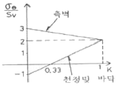
- 수직응력이 수평응력보다 3배이상 크면 천정과 바닥에서는 압축응력이 발생한다.
- 수직응력이 수평응력보다 3배이상 크면 천정과 바닥에서는 인장응력이 발생한다.
- 정수압하의 터널측벽에서는 외압의 3배에 해당하는 압축응력이 발생한다.
- 정수압하의 터널측벽에서는 외압의 3배에 해당하는 인장응력이 발생한다.
(정답률: 알수없음)
89. 기계식 굴착공법의 하나로 사용되는 T. B. M 공법의 장비에 대한 설명으로 틀린 것은?
- 발파공법에 비해 진동과 소음이 크지 않다.
- 이완대의 발달을 줄일 수 있다.
- 지질조건이 변화해도 쉽게 대처할 수 있다.
- 버럭의 크기가 비교적 균일하여 반출작업이 용이하다.
(정답률: 9%)
90. 그림과 같은 토질사면에 발생하는 인장균열(tensile crack)의 깊이 z를 이론적으로 결정하는데 필요한 토질의 물성치가 아닌 것은?
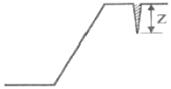
- 지지력 계수
- 점착력
- 내부마찰각
- 단위중량
(정답률: 10%)
91. 다음 터널공사의 조사 및 계획에 대한 사항을 나타낸 것 중 틀린 것은?
- 사전조사란 터널의 완공 직전에 실시하는 조사이다.
- 터널노선이 결정되면 주로 보링조사와 상세한 지표답사가 실시된다.
- 조사결과 현재의 설계로 안정성이 확보되기 어려우면 지체없이 변경을 해야 한다.
- 터널의 계획단계에서 굴착공법 적용성을 검토해야 한다.
(정답률: 16%)
92. 터널 내부의 평판재하시험에서 단계하중을 가하는 목적은 무엇인가?
- 암반의 초기응력 측정
- 암반의 점착력과 내부 마찰각 측정
- 하중수준에 따른 암반변형특성 조사
- 암반의 creep 상황 조사
(정답률: 15%)
93. 공사로 인한 소음ㆍ진동이 작으며 차수성이 좋고 강성이 가장 좋아 대규모 굴착공사에 채택되는 흙막이 공법은?
- 강널판 흙막이
- 강관 널판 흙막이
- 지하연속벽
- 이수고화벽
(정답률: 알수없음)
94. 안정계수가 12, 단위중량이 1.8t/m3, 점착력이 1.5t/m2인 흙으로 된 높이 5m이 사면에 있어서 안전율은?
- 2.0
- 2.4
- 2.9
- 3.6
(정답률: 0%)
95. 그림에서와 같이 복수공동에 수직응력만 작용하는 경우 광주의 폭(Wp)을 공동의 직경(Wo)보다 크게 증가시키면 공동 경계에 발생하는 최대응력집중의 크기는 어떻게 변하는가?
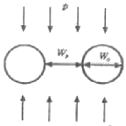
- 감소한다.
- 증가한다.
- 변함없다.
- 증가하다 감소한다.
(정답률: 0%)
96. 터널 천정부에 두께가 1m인 절리 암층이 존재한다. 터널의 안전성 확보를 위하여 종방향, 횡방향으로 간격이 1.5m가 되도록 록볼트를 설치하였다. 암반의 단위중량이 2.7ton/m3이고 록볼트의 극한지지하중이 8ton인 경우, 록볼트의 안전도는?
- 0.7
- 1.0
- 1.3
- 1.6
(정답률: 0%)
97. MATM 공법의 시공에 관한 설명 중 잘못된 것은?
- 2차 라이닝 콘크리트는 변위를 수령한 후 실시한다.
- 원지반 상태가 양호하지 못할 경우 인버트 콘크리트 타설은 2차 라이닝 후 실시한다.
- 1차 숏크리트(뿜어붙이기 콘크리트)는 굴착 후 신속히 실시한다.
- NATM은 원지반이 보유하고 있는 감도를 유효하게 활용하는 공법이다.
(정답률: 0%)
98. 다음 중 지표 침하의 원인이 아닌 것은?
- 터널굴착에 따른 응력해방
- 터널주변 암반의 느슨함
- 지하수 저하에 따른 압축 또는 압밀
- 팽창성 암반의 노출
(정답률: 알수없음)
99. 연직방향으로 토압 σv가 작용하는 지반에서 주동토압(active earth pressure)에 의한 파괴상태를 나타내는 Mohr원은 다음 그림에서 어느 것인가?
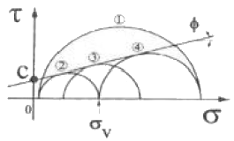
- ①
- ②
- ③
- ④
(정답률: 19%)
100. 시추공을 이용한 공내검층의 목적이 아닌 것은?
- 암반의 물성 파악
- 암반하중의 측정
- 암반의 투수성 평가
- 사료채취 불량구간의 지질 추정
(정답률: 0%)